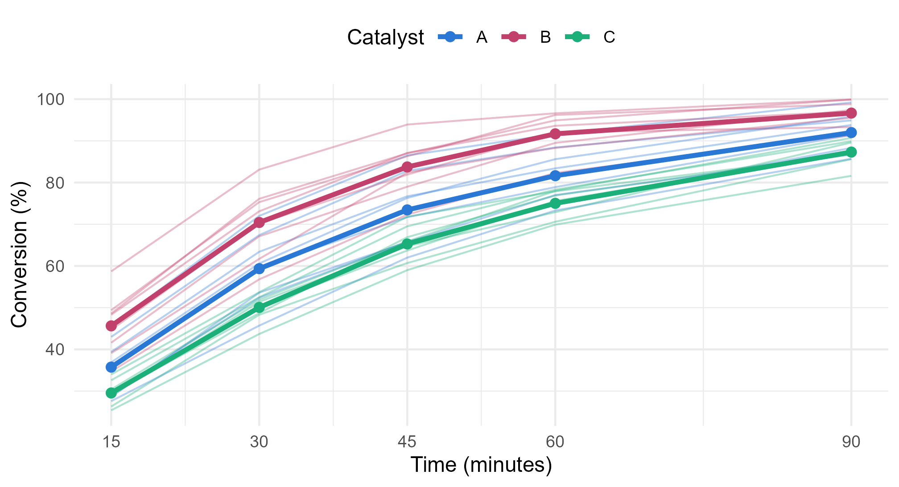

Module 3 · Lesson 9 of 13 Week 55 of 160 About 5–7 hours
Repeated-measures designs
The same batch, measured again and again
Analyze measurements repeated over time on the same subjects: profile analysis with its three questions (parallel, level, flat), the multivariate approach with car::Anova(), the univariate split-plot approach with Mauchly’s test of sphericity and the Greenhouse-Geisser correction, and the summary-statistic approach with a first-order rate constant for each batch.
The kinetics lab wants to know how fast three catalysts work, not just how far each batch gets. So they ran 24 batches, eight with each catalyst, and sampled every batch at 15, 30, 45, 60 and 90 minutes to measure the conversion. That’s a repeated-measures design: each batch is measured five times.
Five samples of the same batch aren’t five independent runs. A batch that’s ahead at 15 minutes is usually still ahead at 90 minutes, so the five measurements are correlated. That’s exactly the situation multivariate methods are made for: treat each batch’s five measurements as one vector. This lesson shows that approach, the classical univariate one and its main assumption, and a third approach that uses the chemistry.
Each batch tells a whole story over time. Today we listen to all five chapters at once!
In this lesson you’ll:
- see why repeated measurements need their own methods
- ask the three questions of profile analysis: are the profiles parallel, at the same level, flat?
- run the multivariate approach with
car::Anova() - run the univariate approach, test its sphericity assumption with Mauchly’s test, and correct for it with Greenhouse-Geisser
- summarize each batch by a number with a chemical meaning: its rate constant
The kinetics study
The data come in wide format, one row per batch and one column per sampling time. Here are all 24 batches, with each catalyst’s mean profile in bold:
long_num <- pr |>
tidyr::pivot_longer(starts_with("conv_"), names_to = "time", names_prefix = "conv_", values_to = "conversion") |>
mutate(time = as.numeric(time))
mean_profiles <- long_num |> group_by(catalyst, time) |> summarise(conversion = mean(conversion), .groups = "drop")
ggplot(long_num, aes(x = time, y = conversion, color = catalyst)) +
geom_line(aes(group = batch_id), alpha = 0.35, linewidth = 0.5) +
geom_line(data = mean_profiles, linewidth = 1.3) +
geom_point(data = mean_profiles, size = 2.2) +
scale_color_manual(values = c(A = "#2a78d6", B = "#C2416C", C = "#1baf7a"), name = "Catalyst") +
scale_x_continuous(breaks = c(15, 30, 45, 60, 90)) +
labs(x = "Time (minutes)", y = "Conversion (%)") +
theme_minimal(base_size = 12) +
theme(legend.position = "top")
Catalyst B is the fastest, and C the slowest. Every curve rises steeply at first and then levels off as the conversion approaches 100%, which is what first-order kinetics predicts. The batches also spread out within each catalyst: some B batches are well ahead of others from the first sample on.
The batch is the subject here: the unit that’s measured repeatedly. The catalyst is a between-subjects factor, since each batch has one catalyst. The time is a within-subjects factor, since every batch is measured at every time.
Your turn. How strongly are the five measurements of a batch correlated? Compute the correlations of the residuals from a model with one mean profile per catalyst. Removing each catalyst’s mean profile leaves the way batches with the same catalyst vary together.
Take the correlations of r, the residuals.
r <- resid(lm(cbind(conv_15, conv_30, conv_45, conv_60, conv_90) ~ catalyst, data = pr))
round(cor(r), 2)All the correlations are between 0.81 and 0.97: a batch that’s ahead stays ahead. They’re highest for samples close in time (0.97 for 15 and 30 minutes) and lowest for the samples furthest apart (0.81 for 15 and 90 minutes). Treating the 120 measurements as independent would be badly wrong.
Profile analysis
In Lesson 5, a profile plot drew a mean vector as a line across its variables. When the variables are the same measurement at different times, that line is a profile over time, and comparing the groups’ profiles is called profile analysis. It asks three questions, in order:
- Are the profiles parallel? That’s the catalyst × time interaction: does the conversion change over time in the same way with every catalyst?
- Are the profiles at the same level? That’s the catalyst’s main effect: averaged over the five times, is the conversion the same?
- Are the profiles flat? That’s the time’s main effect: averaged over the catalysts, does the conversion change with time?
The trick is to transform each batch’s five measurements. Parallel profiles have the same gains from one sample to the next. So parallelism is a one-way MANOVA of the four gains, \mathbf{d} = (x_{30} - x_{15},\ x_{45} - x_{30},\ x_{60} - x_{45},\ x_{90} - x_{60}). The level is a one-way ANOVA of each batch’s average. And flatness is a test that the mean gains are all zero.
Your turn. The setup code has stored the five measurements as the matrix Y. Compute the gains between consecutive samples.
Y[, -1] drops the first column. Drop the last column, the fifth, from the other copy.
D <- Y[, -1] - Y[, -5]
colnames(D) <- c("gain_15_30", "gain_30_45", "gain_45_60", "gain_60_90")
colMeans(D)Y[, -1] holds the samples from 30 to 90 minutes and Y[, -5] those from 15 to 60, so their difference is each sample minus the one before it. On average, the conversion rises by 23 points from 15 to 30 minutes, 14 points from 30 to 45, 9 from 45 to 60, and 9 from 60 to 90. (The last gain covers 30 minutes, not 15.)
Your turn. Test whether the profiles are parallel: a MANOVA of the four gains on the catalyst.
The gains are compared between the catalysts: D ~ catalyst.
summary(manova(D ~ catalyst, data = pr))Pillai’s trace 0.89, F = 3.84 on 8 and 38 degrees of freedom, p = 0.002. The profiles aren’t parallel: the catalysts gain conversion at different rates over time. B gains the most early on, and then has the least left to gain: from 60 to 90 minutes, B’s batches gain 5 points and C’s 12.
Your turn. Test whether the profiles are at the same level: an ANOVA of each batch’s average conversion.
Average each row of Y, the five measurements.
pr$average <- rowMeans(Y)
anova(lm(average ~ catalyst, data = pr))F = 17.1 on 2 and 21 degrees of freedom, p = 0.00004. Averaged over the five samples, the conversion is 77.6% with B, 68.4% with A and 61.4% with C. Since the profiles aren’t parallel, this level test is an average over differences that change with time, much like a main effect with an interaction in Lesson 8. Here, though, B leads at every time and C trails at every time, so the summary is fair.
The third question hardly needs asking here: the conversion obviously rises with time. The flatness test agrees, with F = 3276.
The multivariate approach in R
car::Anova() runs all three tests in one call, on the multivariate model of the five measurements. You tell it how the five columns are organized with an intra-subject design: idata is a data frame with one row per column of the response (here, a time factor), and idesign is a formula in its variables.
Your turn. The setup code has fitted mlm, the model of the five measurements on the catalyst, and stored times, a data frame with the five times as a factor. Run the repeated-measures analysis.
The within-subjects factor is time.
car::Anova(mlm, idata = times, idesign = ~ time)Three tests you’ve already done by hand:
catalystis the level test, F = 17.1, p = 0.00004.timeis the flatness test, F = 3276.catalyst:timeis the parallelism test: Pillai’s trace 0.89, p = 0.002.
(The (Intercept) line tests whether the overall average conversion is zero, which is of no interest.)
The univariate approach and sphericity
The classical alternative is a repeated-measures ANOVA, which is a split-plot ANOVA in disguise. Each batch is a whole plot that gets one catalyst, and the five times are its subplots. aov() fits it from the data in long format, one row per measurement, with an Error() term that says the times are nested in the batches:
long <- pr |>
tidyr::pivot_longer(starts_with("conv_"), names_to = "time", names_prefix = "conv_", values_to = "conversion") |>
mutate(time = factor(time, levels = c("15", "30", "45", "60", "90")))
summary(aov(conversion ~ catalyst * time + Error(batch_id / time), data = long))
#>
#> Error: batch_id
#> Df Sum Sq Mean Sq F value Pr(>F)
#> catalyst 2 5271 2635.7 17.11 3.91e-05 ***
#> Residuals 21 3236 154.1
#> ---
#> Signif. codes: 0 '***' 0.001 '**' 0.01 '*' 0.05 '.' 0.1 ' ' 1
#>
#> Error: batch_id:time
#> Df Sum Sq Mean Sq F value Pr(>F)
#> time 4 44431 11108 2397.246 < 2e-16 ***
#> catalyst:time 8 290 36 7.823 8.49e-08 ***
#> Residuals 84 389 5
#> ---
#> Signif. codes: 0 '***' 0.001 '**' 0.01 '*' 0.05 '.' 0.1 ' ' 1There are two error strata. The catalyst is tested against the variation between batches, with 21 degrees of freedom, and gives the level test again. The time and the interaction are tested against the variation within batches, with 84 degrees of freedom. These F-tests are more powerful than the multivariate ones: the interaction has F = 7.8 and p = 10^{-7}, against p = 0.002.
That power comes from an assumption called sphericity: the difference between the measurements at any two times has the same variance, whichever two times they are. (Equal variances at every time, with equal correlations between every pair of times, is enough for it.) Here, the variance of the gain from 15 to 30 minutes is 3.7, and of the gain from 30 to 90 minutes 19.9. That’s far from equal.
Mauchly’s test checks sphericity. When it fails, the usual fix is to multiply both degrees of freedom of each within-subjects F-test by a correction factor \varepsilon between 1/(t - 1) and 1, where t is the number of times. Two estimates of \varepsilon are common: the Greenhouse-Geisser estimate, which is a little conservative, and the Huynh-Feldt estimate, which is a little less so.
Your turn. The setup code has stored the result of car::Anova() as av. Ask for its univariate tests, which come with Mauchly’s test and both corrections.
multivariate = FALSE leaves out the multivariate tests.
summary(av, multivariate = FALSE)Mauchly’s test rejects sphericity (W = 0.18, p = 0.0001), and the Greenhouse-Geisser estimate is \hat\varepsilon = 0.52: well below 1, which would mean no problem, though above the worst case, 0.25. With the correction, the interaction’s p-value goes from 10^{-7} to 0.00007.
Here are all the tests of the interaction side by side:
| Test of the catalyst × time interaction | p-value |
|---|---|
| Univariate, assuming sphericity | 0.00000008 |
| Univariate, Greenhouse-Geisser corrected | 0.00007 |
| Univariate, Huynh-Feldt corrected | 0.00003 |
| Multivariate (Pillai’s trace) | 0.002 |
They agree that the profiles aren’t parallel, but the uncorrected test is far too optimistic. Which should you report? The multivariate test makes no sphericity assumption at all, but it needs enough subjects (at least t - 1 error degrees of freedom), and with few subjects it has less power. The corrected univariate tests are the usual choice with small samples. Reporting the multivariate test and a corrected univariate test together is common, and when they agree, as here, the conclusion is safe. The modern alternative is a mixed model that describes the correlations directly and copes with missing samples, which the next lesson introduces.
Challenge round
Challenge 1 · Epsilon by hand. Sphericity has a neat matrix form. Take t - 1 = 4 orthonormal contrasts of the five times: columns that each sum to zero, have length 1, and are orthogonal to each other. contr.poly(5) is one such set. If C holds them, then M = C^\top S_p C is the covariance matrix of the four contrasts, where S_p is the pooled within-catalyst covariance matrix. Sphericity means that M is a multiple of the identity matrix, with all its eigenvalues equal. The Greenhouse-Geisser estimate measures how unequal they are:
\hat\varepsilon = \frac{\big(\operatorname{tr} M\big)^2}{(t - 1)\operatorname{tr}\big(M^2\big)} = \frac{\big(\sum \lambda_j\big)^2}{(t - 1)\sum \lambda_j^2} .
It’s 1 when the eigenvalues are equal, and 1/(t-1) when only one isn’t zero. Compute it. (The setup code has stored S_p as Sp.)
\operatorname{tr}(M^2) is sum(diag(M %*% M)).
C <- contr.poly(5)
M <- t(C) %*% Sp %*% C
sum(diag(M))^2 / (4 * sum(diag(M %*% M)))0.5168, the same as car reported. The eigenvalues of M are 12.3, 3.4, 1.5 and 1.3: far from equal. (contr.poly() is designed for equally spaced levels, and the times aren’t. That doesn’t matter here: every set of orthonormal contrasts gives the same eigenvalues, and so the same \hat\varepsilon.)
Challenge 2 · Let the chemistry summarize. A chemical engineer would summarize each batch by its rate constant. For a first-order reaction, the conversion is X = 100\,(1 - e^{-kt}) percent at time t. The setup code has a function, fit_k(), that fits this curve to one batch’s five samples by nonlinear least squares (nls()), and returns k. Apply it to every row of Y, then compare the catalysts’ rate constants with a one-way ANOVA.
apply(Y, 1, f) applies f to each row of Y.
pr$k <- apply(Y, 1, fit_k)
anova(lm(k ~ catalyst, data = pr))F = 14.3 on 2 and 21 degrees of freedom, p = 0.0001. The mean rate constants are 0.030 per minute for A, 0.042 for B and 0.023 for C. In half-lives, \ln 2/k, a typical batch is half converted after 23 minutes with A, 17 with B and 30 with C.
That’s the summary-statistic approach: reduce each subject’s profile to one meaningful number, then use an ordinary method. It sidesteps sphericity entirely, and it answers the question the lab actually asked. It also explains why the profiles can’t be parallel: a faster first-order reaction gains more early and then has less left to gain.
Quick quiz
1. Why can’t the 120 conversion measurements be analyzed as 120 independent runs?
A batch that’s ahead stays ahead: the within-catalyst correlations are 0.81 to 0.97.
2. In profile analysis, what do parallel profiles mean?
Parallel profiles have the same gains between consecutive times, which is why parallelism is tested with a MANOVA of the gains.
3. In the split-plot ANOVA, what is the catalyst tested against?
Each batch gets one catalyst, so the batches are the catalyst’s replicates.
4. What does sphericity mean?
Equal variances and equal correlations are enough for it. Here, the variances of the differences range from 3.7 to 19.9.
5. Mauchly’s test gives p = 0.0001, and \hat\varepsilon = 0.52. What should you do?
The corrections multiply the degrees of freedom by \hat\varepsilon. The multivariate tests don’t assume sphericity at all.
6. What’s the summary-statistic approach?
With a good summary, the analysis is simple and answers the real question.
Wrap-up
You can now analyze measurements repeated over time! Here’s what you’ve learned:
- Repeated measures on the same subject are correlated, so the subject, not the measurement, is the unit of replication.
- Profile analysis asks whether the profiles are parallel (a MANOVA of the gains), at the same level (an ANOVA of the averages) and flat (a test that the mean gains are zero).
car::Anova(mlm, idata, idesign)runs the multivariate tests in one call, andsummary(..., multivariate = FALSE)adds the univariate ones.- The univariate approach is a split-plot ANOVA. It assumes sphericity. Check it with Mauchly’s test, and correct for it with the Greenhouse-Geisser or Huynh-Feldt \varepsilon.
- The multivariate approach makes no sphericity assumption, but needs enough subjects, and has less power when there are few.
- The summary-statistic approach reduces each profile to a meaningful number. For the kinetics study, first-order rate constants show that B is the fastest catalyst and C the slowest.
TipPractice in RStudio (optional, about an hour)
Download profiles.csv into your project’s data-raw/ folder.
- A first mixed model. With the long data, fit
lme4::lmer(conversion ~ catalyst * time + (1 | batch_id), data = long)and look atanova()of it. Its F values match the univariate ANOVA that assumes sphericity. Why? (Hint: a random intercept for each batch gives every pair of times the same correlation.) - Half-lives. Compute each batch’s half-life, \ln 2/k, and compare the catalysts with a one-way ANOVA and Tukey’s intervals. Which pairs of catalysts differ?
- A linearized fit. Compute k instead as the slope through the origin of -\ln(1 - X/100) against t. Batches K13 and K15 reached the analyzer’s upper limit of 99.9% at 90 minutes. What happens to their linearized rate constants, and why does the nonlinear fit cope better?
- Profile plots of the gains. Plot each catalyst’s mean gains between consecutive samples. How does the plot show the non-parallel profiles?
NoteKey words from this lesson
- Repeated-measures design
- A design in which each subject is measured several times, under different conditions or at different times.
- Within-subjects and between-subjects factors
- A within-subjects factor varies within each subject (here, the time). A between-subjects factor is fixed for each subject (here, the catalyst).
- Profile analysis
- Comparing groups’ mean profiles by testing whether they’re parallel, at the same level and flat.
- Sphericity
- The assumption that the difference between any two repeated measurements has the same variance. The univariate repeated-measures F-tests need it.
- Mauchly’s test
- A test of sphericity.
- Greenhouse-Geisser and Huynh-Feldt corrections
- Estimates of \varepsilon, the factor by which the degrees of freedom of the within-subjects F-tests are multiplied when sphericity fails.
- Summary-statistic approach
- Reducing each subject’s repeated measurements to one meaningful number, then analyzing those numbers.
NoteWant to read more?
- Penn State STAT 505, Lesson 9: Repeated Measures Analysis. The split-plot ANOVA, its criticisms, and the MANOVA approach, with a worked example.
- Penn State STAT 502, Lesson 11: Introduction to Repeated Measures. The univariate view: the historical methods, correlated residuals and covariance structures.
- John Fox and Sanford Weisberg, Multivariate linear models in R, section 3, “Handling repeated measures”. How
idataandidesignwork incar::Anova(). - Johnson and Wichern, Applied Multivariate Statistical Analysis, chapter 6, sections 6.8 and 6.9, “Profile analysis” and “Repeated measures designs and growth curves”.